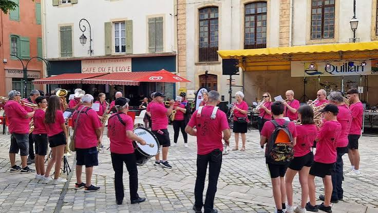

Bandas et
Fanfares AudoisesLa musique de rue, âme des fêtes de village


⟹ Musiques Populaires ⟸
Des fanfares du XIXe siècle aux bandas contemporaines. L'histoire des bandas audoises ne commence pas avec le mot « banda ». Bien avant la diffusion de cette appellation venue du monde ibérique et gascon, l'Aude possédait un tissu particulièrement dense de sociétés musicales : fanfares, harmonies, sociétés philharmoniques, lyres, orphéons et chorales. Leur essor s'inscrit dans le grand mouvement associatif et musical du XIXe siècle, lorsque l'apprentissage collectif de la musique se développe dans les villes, les bourgs viticoles et jusque dans de nombreux villages.
Les archives audoises témoignent de cette extraordinaire vitalité. On rencontre notamment une société musicale à Lapalme dès les années 1860, le cercle de l'orphéon de Fabrezan en 1867, une société chorale à Lézignan-Corbières en 1873, une société philharmonique à Couiza en 1874, des formations à Espéraza à partir de 1876, une fanfare républicaine à Coursan en 1877, puis de très nombreuses sociétés dans les années 1880 : Conques-sur-Orbiel, Douzens, Ferrals, Gruissan, Lagrasse, Limoux, Luc-sur-Orbieu, Marcorignan et bien d'autres. À Limoux, l'Harmonie de Limoux est signalée en 1888. Ces ensembles participent aux fêtes patronales, cérémonies civiques, banquets, processions, concours et manifestations publiques ; ils contribuent à faire de la musique collective un élément familier de la sociabilité locale.
Cette tradition est aussi liée à l'histoire politique et sociale de la IIIe République. Les appellations mêmes de certaines formations — « fanfare républicaine », « lyre républicaine », « enfants du progrès », « avenir musical » — rappellent que les sociétés musicales sont alors des lieux d'éducation populaire, de sociabilité et d'affirmation civique. Elles permettent à des amateurs de lire la musique, de pratiquer un instrument et de participer à la vie collective du village. Dans un département rural et viticole, elles créent des liens durables entre générations et entre communes.

Le répertoire de ces formations évolue avec les goûts populaires. Les fonds de partitions conservés dans l'Aude pour la première moitié du XXe siècle montrent la coexistence des marches et des musiques de cérémonie avec la valse, la polka, le paso doble, le tango, la java, le fox-trot, le one-step, la rumba ou encore des chansons de variété. Cette capacité à absorber les musiques à la mode prépare le terrain à la forme festive et mobile que prendra plus tard la banda.
La banda, au sens moderne. Le terme espagnol banda désigne une formation musicale, notamment d'instruments à vent. Dans le Sud-Ouest français, le mot finit par désigner une formation festive ambulante dominée par les cuivres, bois et percussions, jouant au plus près du public. La culture des ferias, les échanges avec l'Espagne et l'univers des arènes favorisent l'adoption de paso dobles et de répertoires ibériques. Dax joue un rôle majeur dans cette histoire : la Peña Los Calientes, née au début des années 1960, est devenue l'une des formations emblématiques de cette culture de rue.
La banda se distingue de l'harmonie de concert par sa mobilité et par la relation immédiate qu'elle entretient avec la foule. Trompettes, trombones, saxophones, clarinettes, soubassophones ou tubas et percussions permettent de jouer sans amplification et en déplacement. Le répertoire n'est cependant jamais figé : paso dobles, airs de fête, musette, chansons populaires, musiques latines, thèmes de variétés, génériques, adaptations de tubes contemporains et morceaux propres aux carnavals peuvent se succéder au cours d'une même prestation.
Dans l'Aude, cette nouvelle culture musicale ne remplace pas les anciennes fanfares : elle se greffe sur un terrain où la pratique collective des vents est déjà profondément implantée. Les fêtes viticoles, fêtes locales, carnavals, férias, rencontres sportives et manifestations associatives offrent aux ensembles de multiples occasions de jouer. Le caractère viticole du département renforce cette proximité entre musique, rue et convivialité : vendanges, fêtes du vin, repas collectifs et célébrations communales constituent depuis longtemps des moments privilégiés de musique populaire.
Limoux constitue un cas particulièrement remarquable. La musique y est indissociable du Carnaval. Les bandes carnavalesques effectuent leurs sorties sous les arcades de la place de la République précédées ou accompagnées par leurs musiciens. Les airs ne servent pas seulement d'accompagnement : ils règlent l'allure, les arrêts, les reprises et le mouvement caractéristique des Fécos. La lenteur volontaire de certaines mélodies et la manière particulière de « mener » la musique participent à une chorégraphie collective immédiatement reconnaissable.
La place du musicien y est donc essentielle. Le carnavalier adapte ses gestes, sa carabène et son pas à la phrase musicale ; les meneurs placés devant l'orchestre donnent une impulsion visuelle à l'ensemble. Cette relation entre musique et déplacement rappelle une fonction ancienne des fanfares — faire marcher et rassembler un groupe — mais elle est transformée à Limoux en langage carnavalesque. La musique devient un marqueur d'identité autant qu'un divertissement.
À l'échelle nationale, la reconnaissance de « la banda » dans l'Inventaire du patrimoine culturel immatériel en France souligne que cette pratique ne se résume pas à une instrumentation : elle repose sur des répertoires, des modes de transmission, des sociabilités, des fêtes et une manière d'occuper collectivement l'espace public. Dans l'Aude, cette dimension patrimoniale prend une couleur particulière en rencontrant les traditions carnavalesques, viticoles et villageoises du Languedoc.
Les bandas et fanfares demeurent enfin des écoles de transmission. Beaucoup de musiciens commencent dans une école de musique, une harmonie ou une formation associative avant de rejoindre des ensembles festifs. La pratique intergénérationnelle, l'apprentissage par répétition, la mémorisation d'un répertoire commun et l'expérience de la rue entretiennent un patrimoine qui continue d'évoluer. Loin d'être une survivance figée, la banda audoise est ainsi l'héritière de plus d'un siècle et demi de musique associative, enrichie au XXe siècle par les influences ibériques et par la culture festive du Sud-Ouest.
Une banda rassemble cuivres — trompettes, trombones, saxophones, soubassophones — et percussions, parfois accompagnés de porteurs de banderoles et de danseurs. Cette instrumentation, pensée pour être jouée en marchant, permet à la formation d'envahir les rues et de porter loin sa musique, dans une ambiance populaire et généreuse.
La banda demeure l'une des signatures sonores les plus attachantes du Sud-Ouest, capable de faire danser une rue entière en quelques mesures.
— Tradition orale des fêtes du Sud-OuestLe répertoire, volontairement éclectique, va du musette traditionnel aux musiques du monde en passant par le rock, le jazz ou la variété du moment. Cette diversité, portée par la spontanéité des musiciens, invite systématiquement les spectateurs à danser et à se joindre à la fête plutôt qu'à simplement l'observer.
Carnaval de Limoux l'occasion la plus spectaculaire d'entendre les bandas audoises, chaque week-end sous les arcades de la place de la République.
Narbonne ses ferias animées, où les bandas rythment vachettes et bodegas dans une ambiance populaire.
Vignoble limouxin décor de Toques et Clochers, où bandas et dégustations se mêlent chaque printemps.
Carcassonne cité médiévale et ses propres fêtes votives, souvent animées par les fanfares locales.